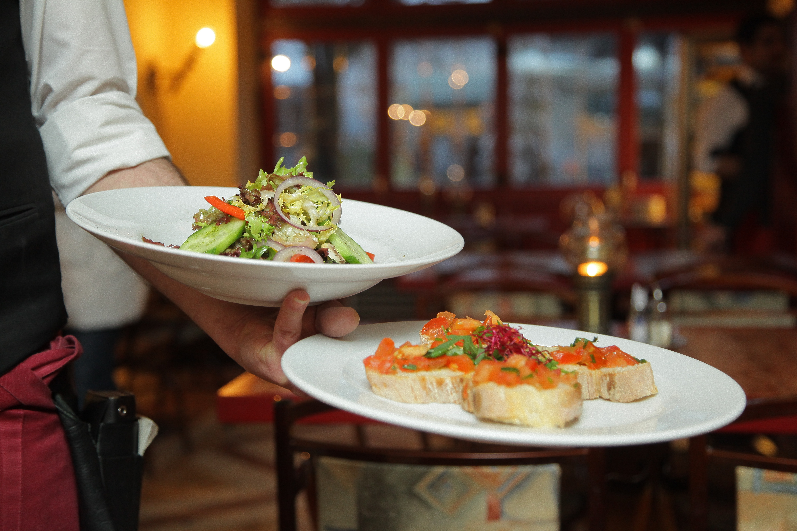

Miku
This Japanese restaurant offers delicious sushi and sashimi, as
well as a unique style of sushi called aburi, which is lightly
seared with a blowtorch for added flavor.

Hawksworth
This upscale restaurant offers contemporary Canadian cuisine, with
dishes like Pacific halibut and Alberta beef tenderloin.

The Fish Counter
This seafood market and restaurant offers sustainable and locally
sourced seafood, with options like fish and chips and lobster
rolls.

MeeT
This vegan restaurant offers delicious plant-based options like
burgers, bowls, and poutine.

Tojo's
This sushi restaurant is run by Tojo, a legendary chef who is
credited with inventing the California roll. Be sure to try the
omakase, a chef's choice tasting menu.